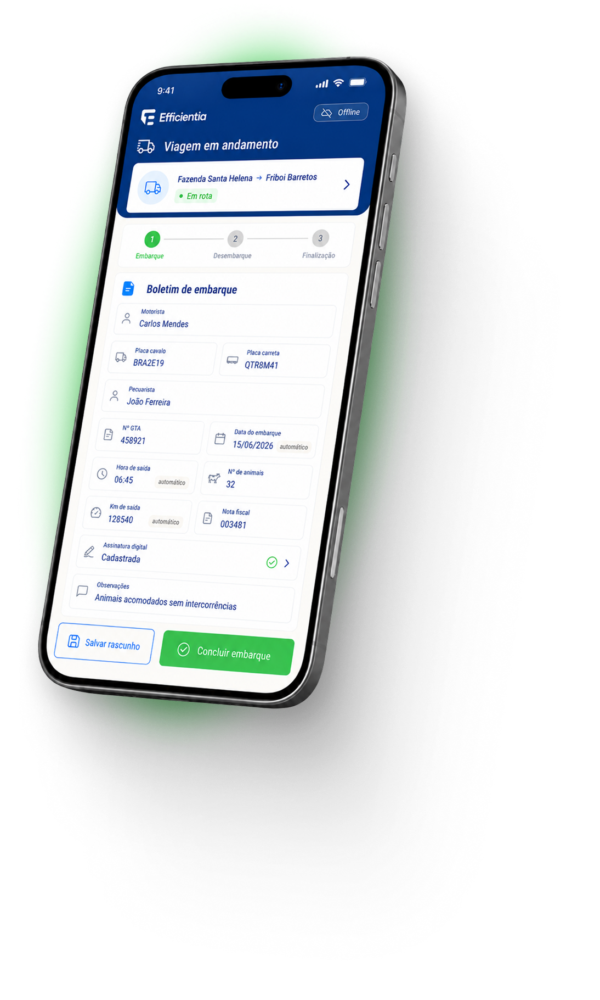
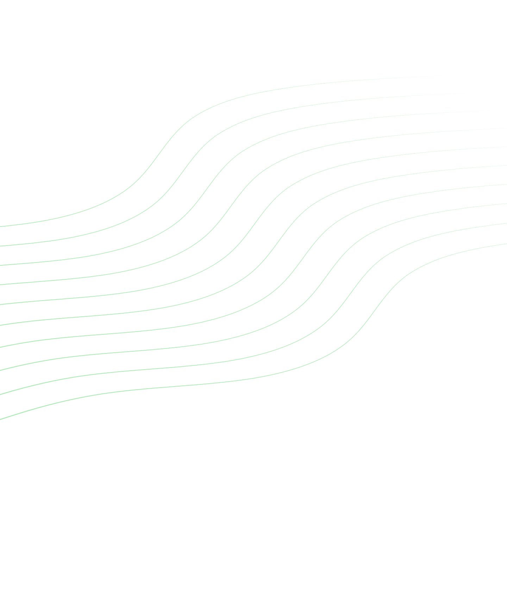
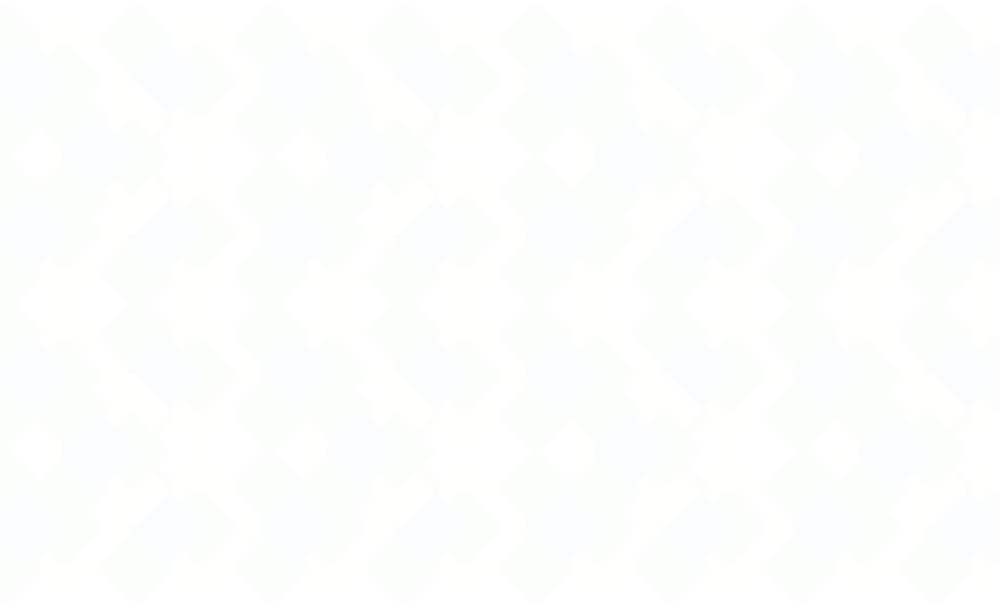
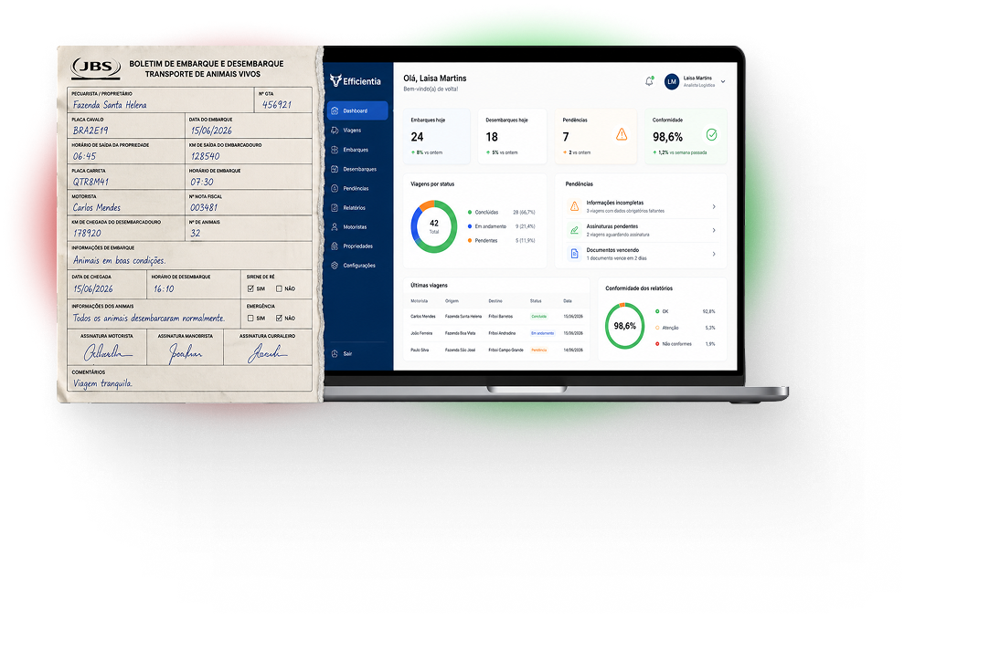
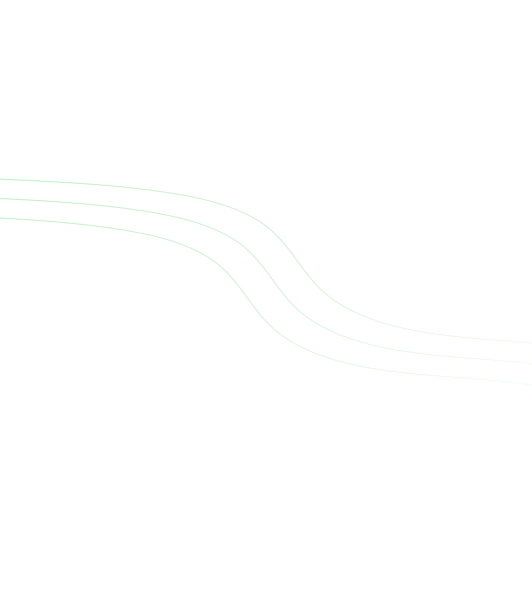
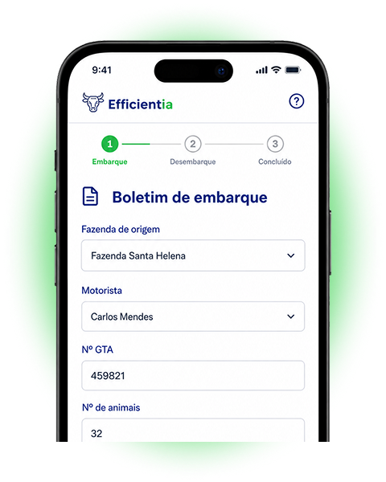
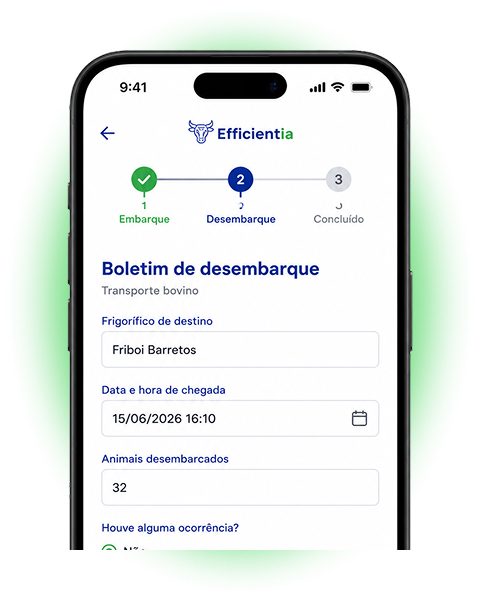
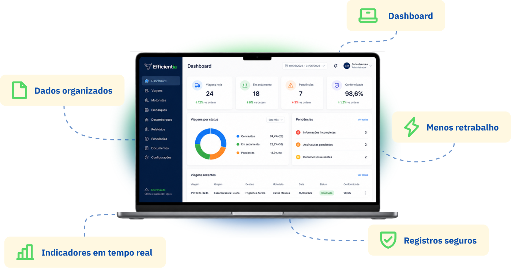
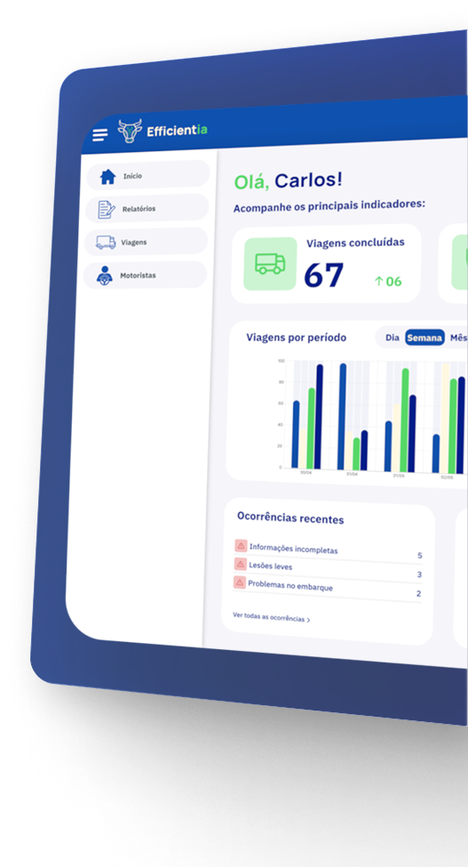

Digitalize relatórios de embarque e
desembarque com mais rapidez,
organização e segurança.



O problema
Relatórios manuais aumentam o retrabalho, geram falhas e
dificultam o controle diário da operação.

Processos manuais que tomam tempo e aumentam custos.
Informações faltantes comprometem a confiabilidade dos registros.
Documentos físicos podem se perder, danificar ou se tornar ilegíveis.

A solução
Um fluxo digital simples, com preenchimento guiado, dados padronizados e registros prontos para consulta.

Campos claros reduzem falhas no registro.

Informações sempre no mesmo formato.
Registros prontos para consulta da operação.
O impacto
O Efficientia digitaliza os registros de embarque e desembarque, reduzindo falhas,
organizando os dados da viagem e apoiando o controle operacional.

próximo passo
Do preenchimento em campo à consulta pela
operação, o Efficientia organiza os registros de
embarque e desembarque em um fluxo digital,
guiado e padronizado.

Projeto Interdisciplinar
Germinare TECH, 2026